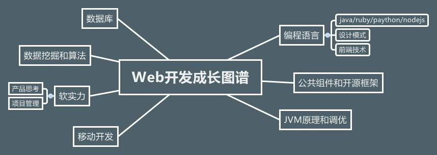

作为一个开发
有修养,随和，但很执着。
肯向任何人学，但是不服任何人；守时，但不墨守成规。
短期目标
迭代学习，快速成长。升P6.
知识图谱
成长记录
编程语言
2013/06/27
学习异常规范，并梳理代码中对的处理。
2013/06/29~每日看一点关于设计模式的书或文章。
框架学习组件
2013/07/01 - 2013/07/05
levelDB框架学习,下一步学习tair的分布式机制
2013/07/21 - 2013/07/25系统学习微博Feeds架构，自己搭建demo，并分享。
2013/08/01 - 2013/08/06借鉴微博推拉模式，丰富喵信技术架构。重构MA后台发送逻辑，虽然不会提升性能，但从中学习设计模式的思想， 总结领域模型方法在项目中应用，提升代码可读性。
2013/08/06 - 2013/08下一步学习metaq中间件
2013/08/16 ~学习分布式系统设计，以及zookeeper的设计思想
JVM调优
2013/08
了解jvm，学习性能测试工具。
数据库
2013/07/04
听劳谦的数据库优化分享，下一步通读《High performance.Mysql》
2013/07/15 - 2013/07/19着重读了一遍《Mysql数据库编程》，并做了分享PPT
数据挖掘
2013/07/28-
学习AR时间序列模型，并应用在工程中
其它
2013/08
主动成长，深入产品和技术细节，推动项目进展。